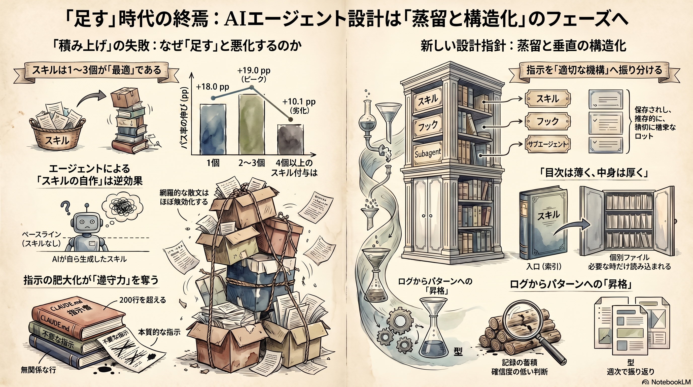

Weekly Insights: 2026-W26（2026-06-22〜06-28）
今週のホットトピック
- 2026-li-skillsbench スキルは「少数精鋭」で効く——自動で増やすほど悪化する — 厳選スキルはパス率を平均+16.6pp押し上げるが、最適は1〜3個で4個以上は劣化、エージェントが自作したスキルはベースを-8〜-11pp下回った。
- claude-code-instruction-methods 「何でもCLAUDE.mdに書くと壊れる」——指示は機構へ振り分ける — Anthropic公式が振る舞い制御の7手段を整理。推奨はCLAUDE.mdを200行未満に保ち、各指示をロード時点・圧縮生存・権威の要件で適切な置き場所へ逃がすこと。
- agent-reflection-layer 「目次は薄く、中身は厚く」——判断を確信度つきで残し、週次で型へ昇格させる — 蓄積ではなく昇格。重要な判断を確信度つきでログ化し、低確信を週次で拾ってパターンへ上げるメタ認知の垂直設計。
深掘り
2026-li-skillsbench スキルは「少数精鋭」で効く SkillsBench（arXiv 2602.12670、Dawn Song ら）は「スキルを足すとエージェントは本当に強くなるか、どれだけ」を同一タスクのあり・なし対試験で初めて定量化しました。結論は二面的です。厳選スキルは効く（task-macroパス率 33.9%→50.5%、+16.6pp）が、その効き方は「足し方」に強く依存する——スキルは1個で+18.0pp・2〜3個で+19.0pp・4個以上で+10.1ppへ低下し、網羅的な散文はほぼ無効（+0.7pp）。さらに重要なのは、エージェントがその場で自作したスキルは no-Skill ベースラインを3構成すべてで下回った（-8.1〜-11.5pp）という負の結果です。「自動でスキルを増やせば賢くなる」という直感を、研究レベルの数字が正面から否定しています。
claude-code-instruction-methods 指示を機構へ振り分ける Anthropic公式ブログ「Steering Claude Code」が、振る舞い制御を7手段（CLAUDE.md・rules・skills・subagents・hooks・output styles・append-system-prompt）として整理しました。出発点は「何でもCLAUDE.mdに書くと壊れる」という観察——共有リポのCLAUDE.mdは誰も消さずに肥大し、無関係な行まで毎回ロードされてトークンを食い、本当に効かせたい指示の遵守を薄めます。だから本質は機能の暗記ではなく、各指示を「いつ読まれるか・圧縮で生き残るか・どれだけ強い権威を持つか」で適切な手段へ振り分けること。Anthropicの推奨はCLAUDE.mdを200行未満に保ち、オーナーを置きコードのようにレビューすること。先週ingestした loop-engineering 内のETH Zurich研究（AGENTS.md肥大で成功率低下・推論コスト+20%超）が、別ルートから同じ結論を裏付けています。
agent-reflection-layer 判断を確信度つきで残し、週次で型へ昇格させる
@kenichiota0711 の連載第3回は、エージェントにメタ認知（思考についての思考）を実装する設計です。核は2つ——重要な判断のたびに「何を・なぜ・他の選択肢・確信度（5段階）」を decisions-log.md に残させ（モニタリング）、週次でAI自身に読み返させて低確信・失敗ケースの共通点を patterns.md へ昇格させる（制御）。設計の規律が示唆的です。入り口の REFLECTION.md は薄い索引に保ち詳細は個別ファイルへ逃がす——「目次は薄く、中身は厚く」。これは上の指示ミニマリズム（200行基準）と同じ発想で、別領域から同じ原理に行き着いています。
今週の中心テーマ
スキルも指示も「足す」局面は終わった。今週は研究・公式ガイダンス・認知設計が独立に同じ結論へ収斂した——レバーは「効くものだけ残して構造化する（蒸留と垂直の層）」へ移り、自動で足すほど悪化する、というのが今週の硬い発見。

先週（W25）は「AIを自律で回し続ける」ループの話でした。今週はその一階下——ループに何を食わせるか——が論点です。資産（W24の「言語化された判断」）も自律（W25のループ）も、与える文脈が蒸留され構造化されて初めてリターンを返す。そして決定的なのは、その蒸留を自動化で代替しようとすると（自己生成スキル・GUIログからの採掘）かえって質が下がるという、今週揃った複数の証拠です。
根拠ページ
- 2026-li-skillsbench（→ 今週のホットトピック#1）
- claude-code-instruction-methods（→ 今週のホットトピック#2）
- agent-reflection-layer（→ 今週のホットトピック#3）
- 2026-hao-skill-mining — GUI操作ログからのスキル自動採掘は、クラスタ自体は読める（8中5が純度0.95以上）のに下流方策の改善に繋がらず、頻度ベースラインにすら負けた負の結果。「読めること」と「転移して効くこと」は別、という今週テーマの直接的な裏付け
- 2026-zhou-colleague-skill — 雑多な作業痕跡を検査・修正・ロールバック可能なスキルパッケージへ自動蒸留する研究。スキルの「生成側」だが、鍵は能力と振る舞いを分け境界づきの編集可能成果物にする点で、無批判な自動生成とは対極
- skill-self-improving-loop — 振り返り→Issue→PRの外部ループ。reflection-layer の「週次でパターンへ昇格」を別セッションへ外部化した形で、人間にマージ判断だけ残す
- structuring-ability — 同じ @kenichiota0711 の構造化力論（全体と部分の入れ子を整理し抽象と具体を行き来する）。省察層の人間側の能力にあたる
既存wikiとの接続
- skill-building-best-practices — Anthropic社内知見の「compact・focusedが網羅的散文に勝つ」を、SkillsBench が +19.0pp vs +0.7pp という数字で定量裏付けした。実務指針が研究で確認された週
- agent-skill-management-system — スキル増殖後の「知識的負債」を扱う管理論。「2〜3個が最適・4個以上で劣化」は、増やす前に剪定するための具体的なしきい値を与える
- skill-library-strategy — スキルライブラリを私有資産とする戦略（Hiten Shah）。今週の証拠は「蒸留されているかどうか」が、そのライブラリを資産にするか騒音にするかを分けると示す
sugeta-san への問い
このwikiは ingest で毎週ページとスキルを足し続けているが、それを剪定・蒸留する逆向きの仕組み（lint / review / skill-cleaner）は、足す仕組みと同じ強度で回っているか？
→ 今週の証拠は「足す自動化」と「引く自動化」の非対称を突いています。SkillsBench の「自己生成スキルはベース割れ」「4個以上で劣化」「網羅的散文は無効」は、自動生成と積み増しを前提にした運用ほど効く警告です。.claude/skills/ の本数と各SKILL.mdの厚み、CLAUDE.mdの行数を、足す前に一度棚卸しする週にできます。
今週の小アクション（5分）
wc -l CLAUDE.md .claude/skills/*/SKILL.md を実行して行数を一覧し、200行を超えるファイルを1つ特定する。そのファイルの中で「常時必要な事実」でない行（手続き＝Skill化／決定論的強制＝hook化できる行）を1ブロック見つけ、逃がし先をメモするところまで。
いますぐAIと一緒に（コピペ）
以下をそのまま Claude / Claude Code に貼って、今週のテーマを自分のスキル運用に当ててみてください。
このリポの .claude/skills/ を SkillsBench の知見で監査して。観点は3つ:
1. スキル本数は「2〜3が最適・4以上で劣化」の基準で見て冗長化していないか。統合・削除できる重複はどれか
2. 各 SKILL.md は compact か。網羅的な散文（ほぼ無効と実証された形）になっているものはどれか
3. complexity contract（適用境界・想定トークンコスト・軽量フォールバック経路）が frontmatter に無いスキルはどれか。1つ選んで追記案を出して
結論は「今すぐ剪定すべき1スキル」と「contract を足すべき1スキル」を名指しで。
参照: wiki/papers/2026-li-skillsbench.md / wiki/concepts/claude-code-instruction-methods.md
さらに読むべきページ
- goal-loop-routine —
goal／loop／routineの動詞の使い分け（いつ止まるか・自分はその場にいるか）。先週のループ論を実務の選択基準へ落とした続き - eval-loop — 生成→基準採点→閾値未満を止める品質ゲート。判断やパターンの「昇格」を機械的に判定する土台になる
- coding-agent-workflow-styles — 委譲低速ループと高速制御ループの2類型。何を自動化に委ね、何を手元で握るかの線引きに効く